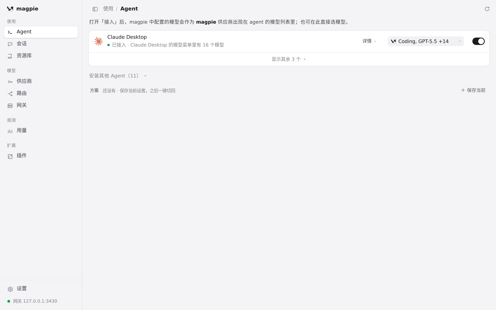

#1042 界面预览
commit 5780efb · 回到 PR · 这次改动只在 macOS 上改原生窗口外壳：在 macOS 26 上把主窗口从「带工具栏」的窗口改成普通标题栏窗口（圆角变小），红黄绿灯仍嵌在页面 header 里，sheet 起点和「另一个 App 在前时首次点击可拖动窗口」的行为保持原样；页面本身没有改。

主窗口顶部：改动所在的位置 · 主窗口整体：这次改的是窗口自身的外壳，页面不变
 主窗口顶部：改动所在的位置 · 窗口最顶部这一条 header：Mac 上信号灯嵌在这里，窗口圆角就是本次改动；浏览器里看不到窗口边框，看不到差别
主窗口顶部：改动所在的位置 · 窗口最顶部这一条 header：Mac 上信号灯嵌在这里，窗口圆角就是本次改动；浏览器里看不到窗口边框，看不到差别